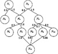

by Abraham Kandel
CRC Press, CRC Press LLC
ISBN: 084934297x Pub Date: 11/01/91
|
|
Fuzzy Expert Systems
by Abraham Kandel CRC Press, CRC Press LLC ISBN: 084934297x Pub Date: 11/01/91 |
| Previous | Table of Contents | Next |
There are many methods of knowledge representation and a thorough description of them is given in The Handbook of Artificial Intelligence I.5 We intend to discuss those that have had a major initial impact upon expert system development. The three most popular knowledge representation schemes are rules, semantic networks, and frames.
Under the heading of rule-based systems comes MYCIN which uses production rules as its knowledge representation scheme. The general form of a rule is shown in Figure 2.
Figure 2 General form of a rule.
Both the premise and the conclusion are normally given some truth value, often called a certainty. The premise is usually some restricted sequence of clauses connected by the connectives and or or. The connectives often serve as min and max operators, respectively. Often, rules are set up in some LISP functional format, or a Prolog Horn clause, or the premise may look like a fully parenthesized logical expression. The conclusion may be an action to be taken or a clause, to be added to working memory, which is in some other premise. An actual rule is shown in Figure 3.
Figure 3 Example rule.
The term semantic networks encompasses a class of knowledge representation formalisms. They are made up of nodes and arcs between them. The nodes usually represent objects, concepts, or situations in the domain. The arcs represent the relations between the particular type of node. A semantic network may be viewed as an acyclic weighted graph. The relational arcs often have weights, indicating the strength of the relation associated with them. The relations are typically not two-valued, but multivalued. CASNET36 is an important example of an expert system which uses the semantic network knowledge representation formalism. Figure 4 shows the structure of a semantic net. In the figure the Ni’s stand for nodes, which could be disease states, for example. The weighted links between them determine how they relate under some appropriately defined relation. As an example, relation between disease states could be a causal one.
A frame is a data structure used for representing a stereotyped situation. It is organized much like a semantic net in many cases. It can provide built-in inheritance properties. A frame is made up of a set of slots. Slots may contain procedures, data, or be pointers to other frames. We, therefore, may have nested frames. A frame system may be implemented in the context of an object-oriented knowledge representation scheme.22 These systems, such as the common LISP object system, allow inheritance through the concept of super- and subclasses. Methods, which act as procedures, will define what actions may be taken when a slot relations are familiar to most. An n-ary relation is an n-tuple of objects. The relation holds with some truth value. A rule may be described as an implication relation, for example. Almost any piece of knowledge may be described as a relation, although it may require some sophistication to accomplish. Relations provide an extremely flexible scheme for knowledge representation. Prospector14 has used relations to represent knowledge about prospecting for minerals. An example of a five-ary basketball team lineup relation is given in Figure 6. The first configuration given is the normal one for a team, the second is only occasionally used.

Figure 4 Semantic net structure.
Figure 6 Relation between types of player in a lineup.
The inference engine uses the knowledge in a particular representation to come to some expert conclusion or offer expert advice. It contains the system’s general problem-solving knowledge. It is responsible for determining what piece of knowledge to use next and scheduling other necessary actions. It will take all actions indicated, as necessary, by a piece of knowledge which is found to be true, due to the current facts presented to the expert system.
The inference engine is responsible for determining when to ask the user a question and when to search the knowledge base for the information. It must ensure that questioning is done in a concise logical manner. In most expert systems it must be responsible for dealing with imprecise and uncertain information.
An inference engine makes use of a special type of expert system knowledge called meta-knowledge. Meta-knowledge is knowledge about the system knowledge. This may include such things as how best to utilize various knowledge chunks, which pieces of knowledge to use first, whether a piece of knowledge should be inferred or asked of the user, and when to stop processing. This knowledge may be in the knowledge base in the same representation as other knowledge; it is just used in a different manner.
Inference engines operate primarily in one of two ways. They may be data driven, known as forward chaining, or they may work backward from conclusions, known as backward chaining. A forward chaining system begins with some data and moves down the inference chain until it reaches a final node, frame, or conclusion. A backward chaining system begins with some final node, frame, or conclusion and works backward until it finds a complete path of evidence for one of the stopping states. MYCIN is a backward chaining expert system. XCON25 is a forward chaining expert system. There are some expert systems which use a combination of forward and backward chaining, such as SPERILL II.27
We have discussed how knowledge may be represented in an expert system and how that knowledge may be used to infer some conclusions. The question that arises concerns the methodology of acquiring the knowledge. Knowledge acquisition is a bottleneck in expert system development. Typically, the knowledge engineer and the expert system developer must sit down with an expert, in many long sessions, and extract the expert’s domain knowledge for use in the expert system.
The knowledge engineer must have some understanding of the expert’s area so that he can converse in the expert’s lingo. The expert will often not be able to provide general problem-solving heuristics. Example problems often must be presented and the heuristics explicated in the process of the expert solving them. The initial heuristics gathered tend to be incomplete and often not quite correct. Therefore, the process of gathering knowledge is incremental and coincides with the development and testing of the expert system.
| Previous | Table of Contents | Next |
){kind=link}
){kind=link}
){kind=link}
){kind=link}
){kind=link}